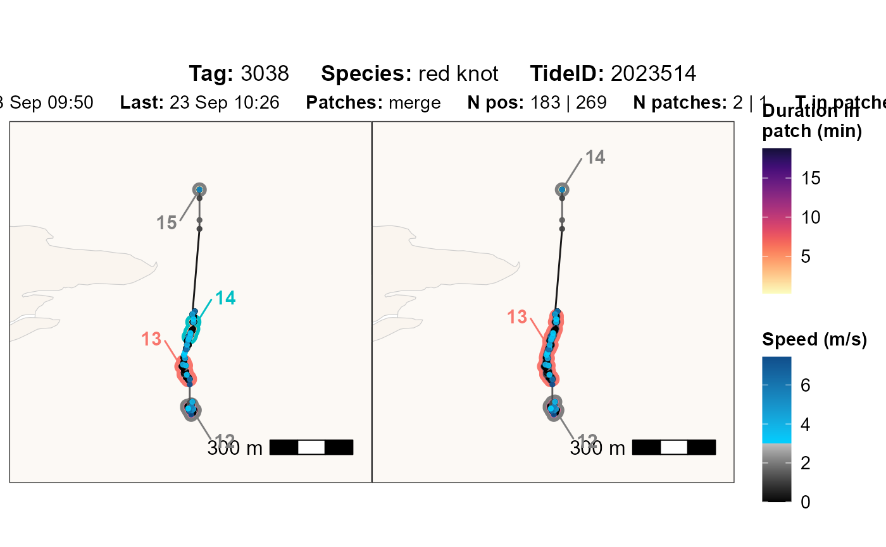
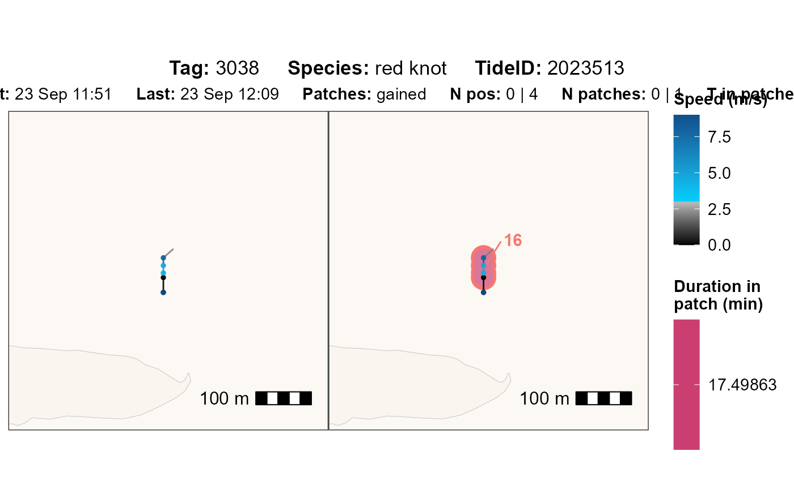
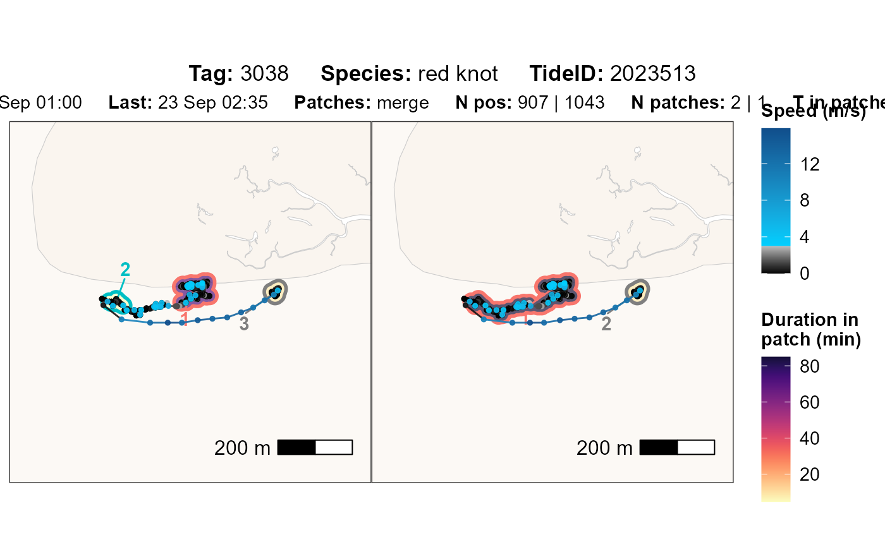

Plot residence patches to compare two versions of parameters for one tag
Source:R/fun_compare_res_patch_plot.R
atl_compare_res_patch_plot.RdGenerates a side-by-side ggplot2 showing residence patches from two
versions of processed tracking data (data_v1 and data_v2) for a single
tag, including movement paths, patch durations, and annotated summaries.
Useful for reviewing changes in patch detection between processing versions.
Usage
atl_compare_res_patch_plot(
data_v1,
data_v2,
tag,
change,
patch_v1,
patch_v2,
time_buffer = 600,
speed_threshold = 3,
point_size = 1,
point_alpha = 0.9,
path_linewidth = 0.5,
path_alpha = 0.9,
patch_label_size = 4,
patch_label_padding = 1,
patch_alpha = 0.7,
element_text_size = 11,
buffer_res_patches = 20,
buffer_bm = 250,
water_fill = "white",
water_colour = "grey80",
land_fill = "#faf5ef",
land_colour = "grey80",
mudflat_colour = "#faf5ef",
mudflat_fill = "#faf5ef",
mudflat_alpha = 0.6,
filename = NULL,
png_width = 3840,
png_height = 2160
)Arguments
- data_v1
A
data.tablecontaining tracking data from version 1. Must include the columns:tag,x,y,time,datetime, andpatch, as created byatl_res_patch(). OptionallyspeciesandtideID.- data_v2
A
data.tablecontaining tracking data from version 2. Must include the same columns asdata_v1.- tag
Tag ID to subset and plot.
- change
Character describing the type of change between versions (e.g.
"gained","lost","split","merge"). Used for plot only..- patch_v1
A comma-separated character string of patch IDs from version 1 to highlight (e.g.
"1,2,3"). UseNAif no patches exist in v1.- patch_v2
A comma-separated character string of patch IDs from version 2 to highlight (e.g.
"1,2,3"). UseNAif no patches exist in v2.- time_buffer
Numeric. Seconds to extend the time window around the focal patches (default: 600).
- speed_threshold
Speed threshold in m/s for colour scale of movement speed (default: 3 m/s).
- point_size
Size of plotted points (default: 1).
- point_alpha
Transparency of points (default: 0.9).
- path_linewidth
Line width of movement paths (default: 0.5).
- path_alpha
Transparency of movement paths (default: 0.9).
- patch_label_size
Font size for patch labels (default: 4).
- patch_label_padding
Padding for patch labels (default: 1).
- patch_alpha
Alpha for patch polygons (default: 0.7).
- element_text_size
Font size for axis and legend text (default: 11).
- buffer_res_patches
A numeric value (in meters) specifying the buffer around the polygon of each residence patch (default: 20).
- buffer_bm
Map buffer size in meters (default: 250).
- water_fill
Water fill colour (default:
"white").- water_colour
Water border colour (default:
"grey80").- land_fill
Land fill colour (default:
"#faf5ef").- land_colour
Land border colour (default:
"grey80").- mudflat_colour
Mudflat border colour (default:
"#faf5ef").- mudflat_fill
Mudflat fill colour (default:
"#faf5ef").- mudflat_alpha
Mudflat transparency (default: 0.6).
- filename
Character (or
NULL). If provided, the plot is saved as a.pngfile to this path and filename; otherwise the plot is returned.- png_width
Width of saved PNG in pixels (default: 3840).
- png_height
Height of saved PNG in pixels (default: 2160).
Details
Made to plot results of atl_compare_res_patch_summary(). The N pos, N
patches and T in patches are only based on the patches of interest. By
setting time_buffer other patches (or parts within the buffer) will be
shown in the plot if they are within the period.
Examples
# packages
library(tools4watlas)
library(foreach)
# load example data
data <- data_example
# run atl_res_patch with two different parameter sets
data_v1 <- atl_res_patch(
data[tag == "3038"],
max_speed = 3, lim_spat_indep = 75, lim_time_indep = 180,
min_fixes = 3, min_duration = 120
)
data_v2 <- atl_res_patch(
data[tag == "3038"],
max_speed = 5, lim_spat_indep = 75, lim_time_indep = 180,
min_fixes = 3, min_duration = 120
)
# change summary
change_summary <- atl_compare_res_patch_summary(data_v1, data_v2)
#> === Patch changes summary ===
#> Lost (v1 patches gone in v2) : 0
#> Gained (new patches in v2) : 1
#>
#> Splits (one v1 -> multiple v2): 0
#> Merges (multiple v1 -> one v2): 2
#>
# plot specific change
i <- 1
atl_compare_res_patch_plot(
data_v1 = data_v1,
data_v2 = data_v2,
tag = change_summary$tag[i],
change = change_summary$change[i],
patch_v1 = change_summary$patch_v1[i],
patch_v2 = change_summary$patch_v2[i]
)

# plot all changes in loop
# for many changes, it makes sense to set a filename to save the plots
foreach(i = 1:nrow(change_summary)) %do% {
atl_compare_res_patch_plot(
data_v1 = data_v1,
data_v2 = data_v2,
tag = change_summary$tag[i],
change = change_summary$change[i],
patch_v1 = change_summary$patch_v1[i],
patch_v2 = change_summary$patch_v2[i]
)
}
#> [[1]]

#>
#> [[2]]

#>
#> [[3]]
#>